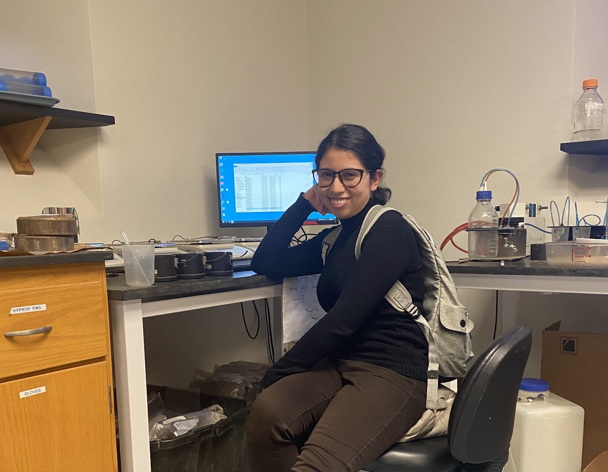
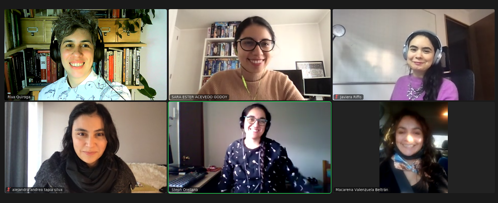
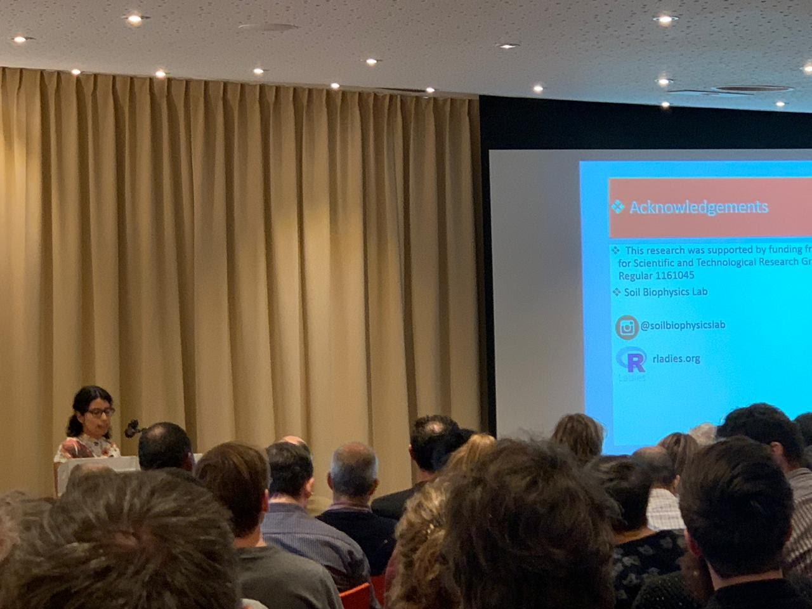
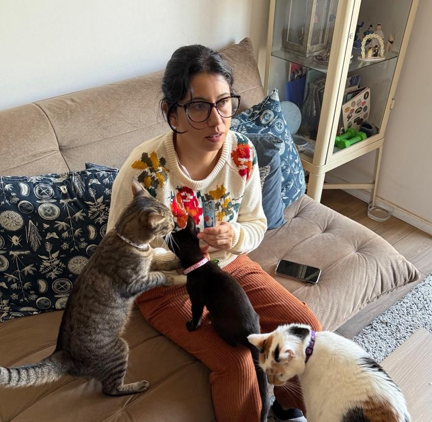
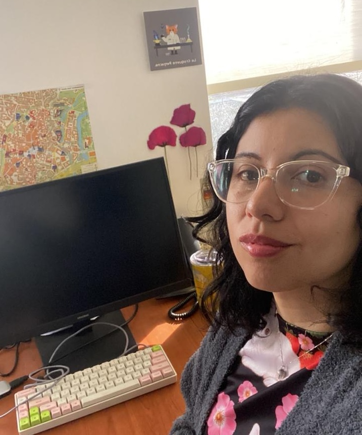
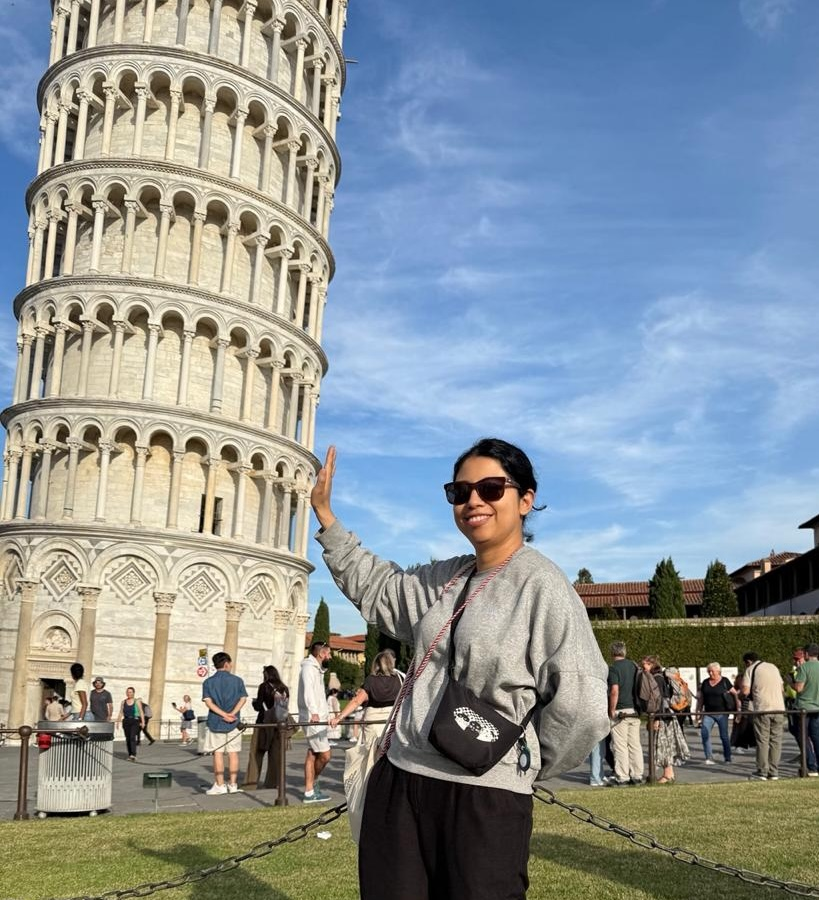

library(tidyverse)
# 1. Mira la estructura de tus datos reales (esto NO se comparte)
glimpse(datos_reales)
# 2. Crea una base sintética con las mismas columnas y tipos
set.seed(123)
datos_sinteticos <- tibble(
comuna = sample(c("Santiago", "Maipú", "Ñuñoa"), 30, replace = TRUE),
edad = sample(18:80, 30, replace = TRUE),
ingreso = round(rnorm(30, mean = 800000, sd = 200000)),
satisfecho = sample(c("Sí", "No"), 30, replace = TRUE)
)
# 3. Comparte solo esto con la IA
glimpse(datos_sinteticos)Usando IA para visualización de datos reproducibles con R
WiDS 2026 - Women in Data Science
Dra. Sara E. Acevedo ![]()
Pontificia Universidad Católica de Chile - Centro de Desarrollo Urbano Sustentable
Acerca de mi 👩🏽💻



Profesora Asistente Facultad de Agronomía y Sistemas Naturales
Parte de RLadies Santiago y RSE-Chile
Investigadora CEDEUS
Dos verdades y una mentira 👩🏽💻



Me encantan los gatos
Me causa un poco de rechazo la IA en la investigación
Nunca he visitado Italia
Veamos unas cosas antes del taller
Uso responsable de la IA en investigación
El código generado por IA puede tener más defectos que el humano. Si no entiendes cómo funciona, no podrás arreglarlo cuando falle
La IA puede reproducir código de otros sin citarlos. Hay demandas contra GitHub Copilot por los datos con que fue entrenado.
Se puede exponer información privada y violar leyes de protección de datos. Además, entrenar y usar estos modelos consume mucha energía.
Cómo usar la IA de forma responsable
El trabajo pasa de escribir código a revisarlo. Todo código generado se revisa y se prueba; el vibe coding queda solo para proyectos personales o de bajo riesgo.
Declarar dónde y cómo se usó la IA, en el README, en los scripts y en los manuscritos.
La autora responde por su software y sus resultados, aunque lo haya escrito una IA. Documentar bien facilita validar y reutilizar el trabajo.
¿Qué es un LLM?
- Predice la siguiente palabra más probable, una y otra vez, hasta armar la respuesta.
- No busca la respuesta en una base de datos ni en internet por defecto: la construye por probabilidad.
- Aprendió patrones de enormes cantidades de texto, como quien reconoce un salón a oscuras porque ha visto miles.
🎲 Predecir la siguiente palabra
Para visualizar datos en R uso
¿Qué es un token?
- Es la pieza mínima que procesa el modelo: una palabra, un pedazo de palabra o un signo.
- Se cobra por token, y los de salida cuestan más que los de entrada.
- En general, el español usa más tokens que el inglés.
🧮 Escribe y mira los tokens (estimación)
¿Qué es un prompt?
Un prompt es la instrucción que le damos al modelo: la tarea, el contexto y el formato en que esperamos la respuesta.
- Ser claro y directo: si una persona sin contexto no entendería tu prompt, el modelo tampoco. “Haz un gráfico de barras horizontales con los km de ciclovía por comuna, ordenado de mayor a menor” funciona mejor que “Grafica los datos”.
- Explicar el por qué: dar la razón detrás ayuda al modelo a entender qué buscas.”Usa letra grande, porque el gráfico se proyectará en una sala” funciona mejor que solo “usa letra grande”.
¿Qué es un prompt?
Un prompt es la instrucción que le damos al modelo: la tarea, el contexto y el formato en que esperamos la respuesta.
- Dar ejemplos y un rol: 3 a 5 ejemplos variados mejoran la precisión; una frase como “Eres experta en ggplot2” orienta las respuestas.
- Decir qué hacer, no qué evitar: “Usa la paleta viridis, apta para daltonismo” funciona mejor que “No uses rojo y verde”.
¿Mis datos son privados? 🔒 Pero quiero usar IA!
- Lo que pegas en un chat sale de tu computador y deja de estar bajo tu control.
- La IA no necesita tus datos reales: le basta con conocer su estructura, es decir, los nombres de las columnas, los tipos de datos y algunos valores de ejemplo.
- Crea datos sintéticos: una base falsa, pequeña y con la misma estructura. Así el código que te devuelva la IA funcionará con tus datos reales sin cambios.
Datos sintéticos en la práctica
Ejemplo de prompt
Prompt: “Tengo una base con esta estructura: [pega el glimpse()]. Escribe código ggplot2 para comparar el ingreso por comuna.”
Más allá del chat web: tres formas de usar un LLM
- Chat web (Claude, ChatGPT en el navegador): ideal para explorar y conversar, pero no para analizar miles de textos.
- API: el mismo modelo, llamado desde código. Permite automatizar y escalar, pero se paga por token.
- Modelo local: un modelo abierto que corre en tu computador o en un servidor del laboratorio. Tus datos nunca salen de tu máquina.
¿Por qué un modelo local en ciencia? 🔒
| Chat web | API | Local (Ollama) | |
|---|---|---|---|
| Privacidad | Van a un tercero | Van a un tercero | Quedan en tu equipo |
| Costo | Suscripción | Por token (puede sumar miles de US$) | Solo electricidad |
| Escala | Texto a texto | Alta, pero el costo crece | Alta, sin costo extra |
| Requisito | Un navegador | Programar un poco | Buen hardware (GPU) |
Para un comité de ética, analizar texto confidencial localmente es como analizar datos numéricos confidenciales en tu propio computador.
Cómo empezar con un modelo local
- Instala Ollama: software libre para Windows, macOS y Linux que corre Llama, Mistral, Gemma, DeepSeek y otros modelos.
- Descarga un modelo desde la terminal.
- Úsalo desde R con el paquete
ellmer, igual que un chat, pero sin internet.
just because you charquican, doesn’t mean you charquishould
Donde contactarme 👩🏽💻
- En instagram: soilbiophysicsgirls
- Web: saryace.github.io
Ahora el Taller 👩🏽💻
Repositorio del taller
saryace.github.io/seminario_sacevedo/wids_2026